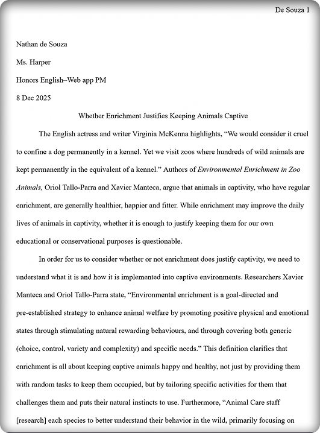

CHALLENGES CONQUERED
- The Problem: I struggled to find sources online that supported my argument.
- The Solution: I used various AI tools that searched for sources that were tailored towards my argument.
- The Problem: Many of the sources were biased to one end of the spectrum.
- The Solution: I gave both ends of the spectrum in my paper however I reinforced the end that supported my argument.
- The Problem: One of my sources had a group name as the author name and I didn’t know how to cite it.
- The Solution: I asked my instructor how to do it and she helped me understand how to do it.

CONCEPTS LEARNED
- MLA Formatting During the writing of this paper, we learned how to properly format text in MLA, with citations and a works cited page.
HABITS OF MIND
- Reflection: When I was completely stuck and didn’t know what to write next, I looked back to reflect what I had written already and think of a game plan on how to approach the next sentence/paragraph.
- Investigation: I had to Investigate many different sources and think about how they related to my paper, and how I could implement quotes into it as well.